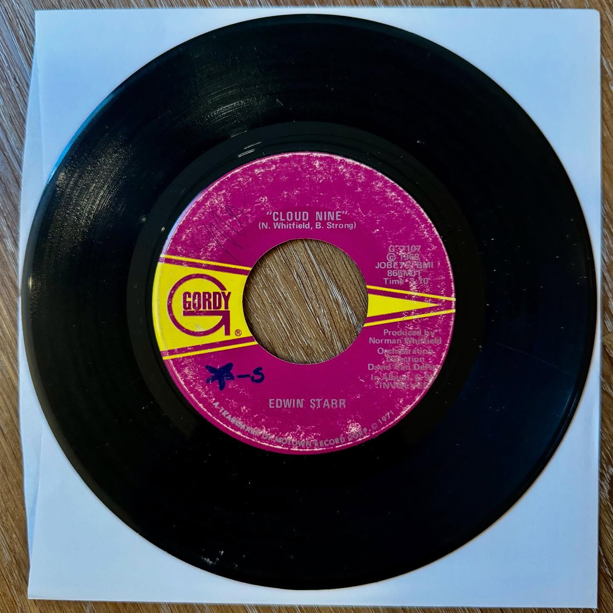

Edwin Starr
Funky Music Sho Nuff Turns Me On / Cloud Nine
photo unavailable? open original Instagram post



record information
- artist
- Edwin Starr
- a-side
- Funky Music Sho Nuff Turns Me On
- b-side
- Cloud Nine
- label
- Gordy
- catalog no.
- G 7107
- year / pressing
- 30 March 1971
research / notes
The pink Gordy label shows Edwin Starr's “Cloud Nine.” The matching G-7107 single is documented with “Funky Music Sho Nuff Turns Me On” as the A-side and “Cloud Nine” as the B-side, issued March 1971.
original collection notes
this original Instagram post has no caption; artist and track details are awaiting identification.
posted · no. 030